Kamaishi
Kamaishi · Iwate
Kamaishi
Highlighted on the Iwate map.
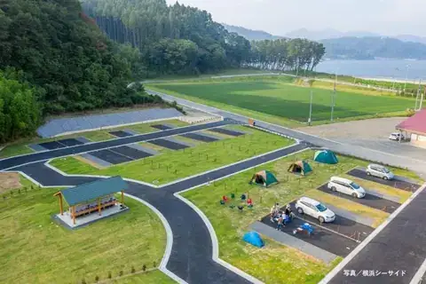
Stay
ホテルフォルクローロ三陸釜石
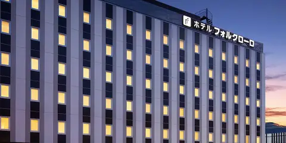
Hoteruforukurooro Sanriku Kamaishi
Hotel in Kamaishi, Iwate.
備長炭の湯 ホテルクラウンヒルズ釜石(BBHホテルグループ)
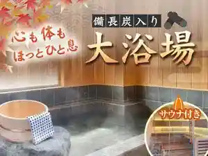
Binchou Sumi No Yu Hoterukuraunhiruzu Kamaishi (Bbh Hoteruguruupu )
Hotel in Kamaishi, Iwate.
釜石ベイシティホテル
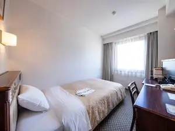
Kamaishi Beishiteihoteru
Hotel in Kamaishi, Iwate.
陸中海岸グランドホテル
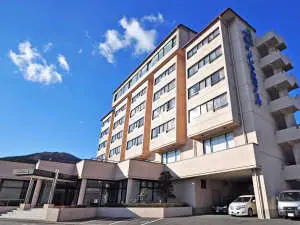
Rikuchuu Kaigan Gurandohoteru
Hotel in Kamaishi, Iwate.
光明石温泉 ホテル釜石ヒルズリバーサイド店 BBHホテルグループ
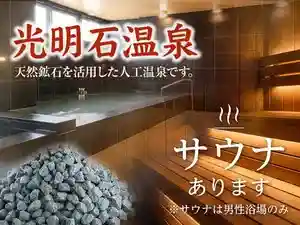
Koumyou Ishi Onsen Hoteru Kamaishi Hiruzuribaasaido Mise Bbh Hoteruguruupu
Hotel in Kamaishi, Iwate.
ホテル フォルクローロ三陸釜石＜JR東日本ホテルズ＞
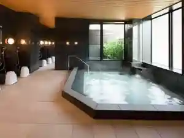
Hoteru Forukurooro Sanriku Kamaishi (Jr Higashinihon Hoteruzu)
Hotel in Kamaishi, Iwate.
ホテルシーガリアマリン 別邸 波平
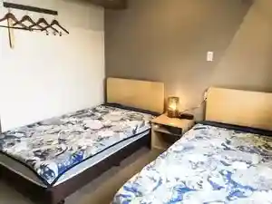
Hoterushiigariamarin Bettei Namihei
Hotel in Kamaishi, Iwate.
Dining
新華園本店
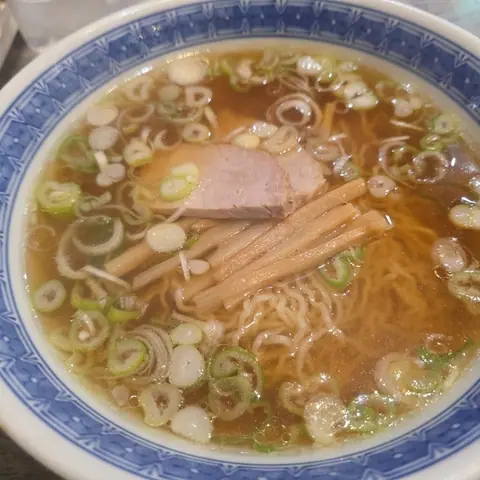
Shinka Sono Honten
Chinese restaurant in Kamaishi, Iwate.
工藤精肉店食堂部
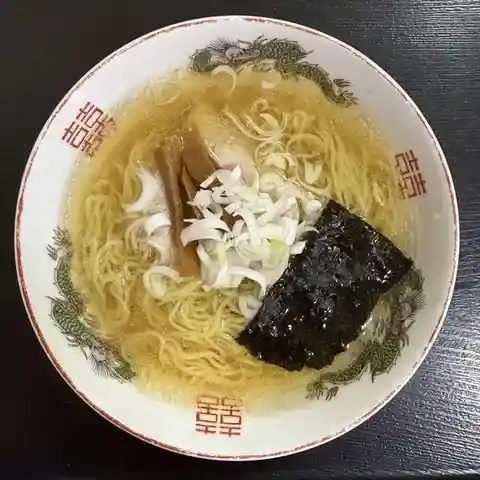
Kudou Seinikuten Shokudou Bu
Shokudo diner in Kamaishi, Iwate.
そば処 釜石駅店
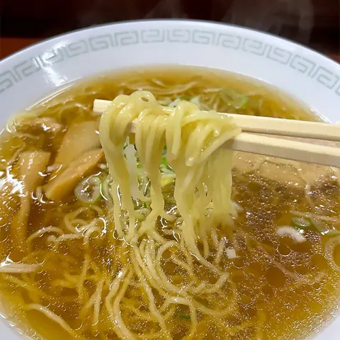
Soba Tokoro Kamaishi Eki Mise
Soba restaurant in Kamaishi, Iwate.
ろばたや 釜石店
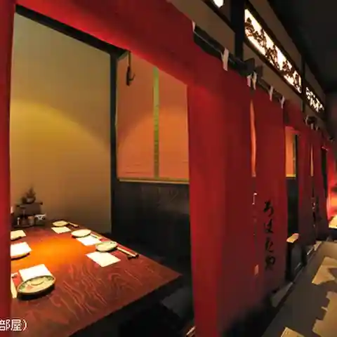
Robataya Kamaishi Mise
Local-cuisine restaurant in Kamaishi, Iwate.
三重食堂
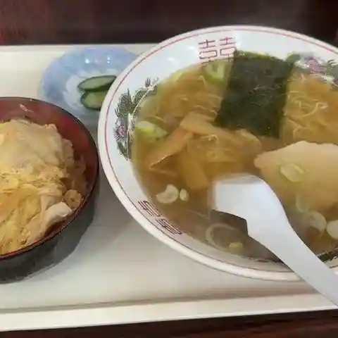
Mie Shokudou
Shokudo diner in Kamaishi, Iwate.
橋野食堂
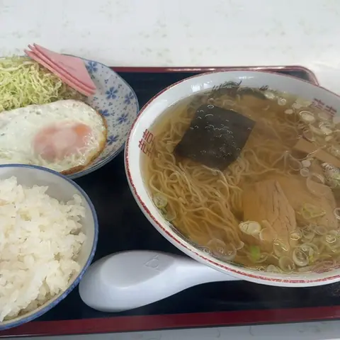
Hashino Shokudou
Shokudo diner in Kamaishi, Iwate.
新来軒
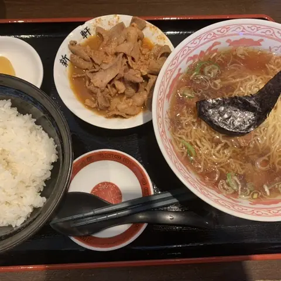
Shinrai Ken
Horumon (offal) grill in Kamaishi, Iwate.
青龍
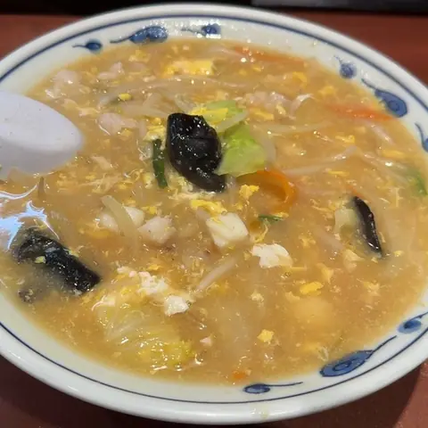
Seiryuu
Chinese restaurant in Kamaishi, Iwate.
麺飯店 喜楽
Men Hanten Kiraku
Shokudo diner in Kamaishi, Iwate.
道の駅 釜石仙人峠
Michi No Eki Kamaishi Sennin Touge
Roadside-station eatery in Kamaishi, Iwate.
新華園 支店
Shinka Sono Shiten
Chinese restaurant in Kamaishi, Iwate.
よしよし
Yoshiyoshi
Izakaya in Kamaishi, Iwate.
和の膳 みや川
Nagono Zen Miya Kawa
Japanese restaurant in Kamaishi, Iwate.
佐々木食堂
Sasaki Shokudou
Ramen shop in Kamaishi, Iwate.
よしや
Yoshiya
Jingisukan (lamb BBQ) restaurant in Kamaishi, Iwate.
あいどる
Aidoru
Coffee shop in Kamaishi, Iwate.
お食事ハウス あゆとく
O Shokuji Hausu Ayutoku
Curry restaurant in Kamaishi, Iwate.
宝来館
Hourai Kan
Inn restaurant in Kamaishi, Iwate.
三陸居酒屋 漁火
Sanriku Izakaya Isaribi
Izakaya in Kamaishi, Iwate.
煮干し中華そば 元翔
Niboshi Shi Chuuka Soba Moto Shou
Ramen shop in Kamaishi, Iwate.
そば処 もりのや
Soba Tokoro Morinoya
Soba restaurant in Kamaishi, Iwate.
魚河岸 庄五郎
Uogashi Shougorou
Seafood restaurant in Kamaishi, Iwate.
牛牛
Ushi Ushi
Yakiniku (grilled meat) restaurant in Kamaishi, Iwate.
Sights
Nehama Seaside Auto Campsite
It reopened in August 2019 with the keyword "environmentally friendly."
Nehama Coast
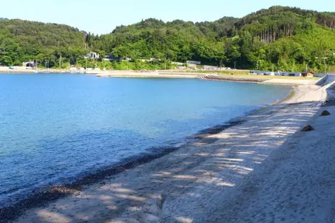
This is a coastline that forms an arc at the mouth of the Unosumai River.
Kaihozuke (Marinated Seafood)
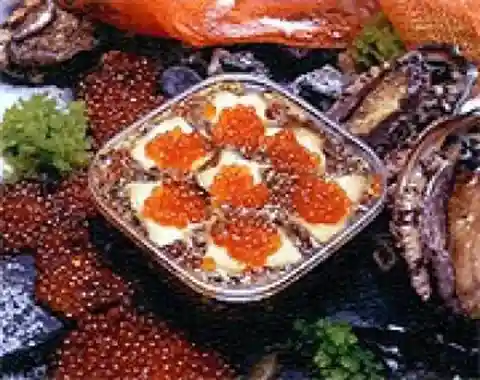
This is an original product from a long-established restaurant, made with softly boiled abalone, salmon roe, mekabu, and capelin eggs marinated in a secret sauce.
Kamaishi Ramen
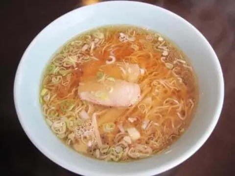
Kamaishi Ramen is known for its clear amber soup and ultra-thin curly noodles.
Ekimae Kyojo Market Sun Fish Kamaishi
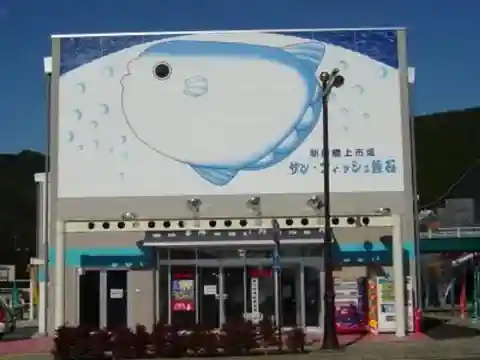
Ekimae Hashigami Market Sun Fish Kamaishi
Roadside Station Kamaishi Sennin Toge
Located at the end of Sennintoge Road, near Kamaishi Nishi IC, at the intersection with National Route 283.
Kasshi Persimmons
Koshi persimmons are a specialty of Koshi Town in the western part of Kamaishi City.
Hama Chidori
Hamachidori is located in the coastal area of Nanbu Toji Country and is nurtured by the environment of the Sanriku coast and the Kitakami Mountains.
Unosumai Tomosu
Earthquake Related History and Heritage Facilities
Uogashi Terrace
A facility opened in 2019 as a base to create liveliness around the waterfront area of Kamaishi City.
miffy cafe kamaishi
With the cooperation of the Embassy of the Kingdom of the Netherlands and Dick Bruna Japan Co., Ltd., this is an original cafe in Kamaishi with the theme of Miffy, the main character in the rabbit picture books drawn by Dutch picture book author and…
Sanriku Onoya Simmered and Grilled Fish
The basis of deliciousness is the ingredients.
Creative Farmer Cosmos
We have been closed indefinitely since 2024.
Sennin Hisui Spring Water
This is the first non-heat treated natural mineral water permitted in Japan.
Former Kamaishi Mine Office
Originally the general office of Kamaishi Mining Co., Ltd. Nationally registered tangible cultural property.
Miracle Stone
This stone is located in the Ryōishi area of Kamaishi City and withstood the massive tsunami of March 11, 2011.
Hashino Acorn Plaza
We are proud of our wide selection of products, including fresh vegetables picked that day, handmade pickles, dumplings, and woodwork.
Hashino Iron Mine [World Heritage Site]
It was built between 1858 and 1858 under the technical guidance of Kato Oshima, said to be the father of modern steelmaking, and was later run by the Nanbu domain, making it the oldest Western-style blast furnace site.
Kamaishi City Local Museum
As a base for conveying the culture and climate of Kamaishi City, we have set the themes of "Nature," "Archaeology," "Historical Sites," "Folklore," "Kamaishi of the Showa Era," and "Tsunami/War Damages," and donated items from citizens.
Ohira Park
This park is located near the Kamaishi Daikannon, and on the observation deck there is the "Japan-China Eternal Peace Statue," which comforts the spirits of Chinese people who were forcibly taken from China and died during the war, and pledges friendship…
Ozaki Peninsula
Located on the south side of Kamaishi Bay, there is a nature trail from Ozaki Shirahama fishing port to Ozaki Lighthouse.
Mt. Goyo
A mountain with an altitude of 1,351m and semi-plain terrain.